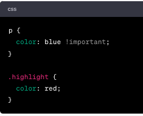
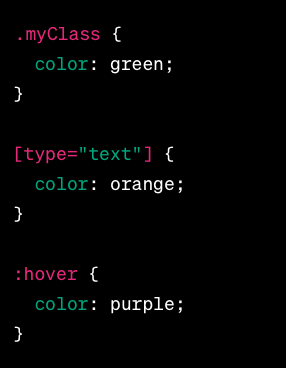
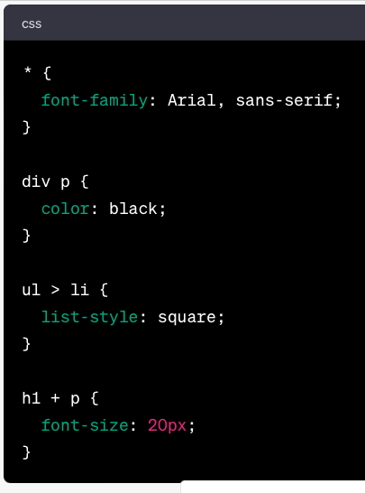

CSS Reset
The purpose of a CSS reset is to override or neutralize the default styles of CSS, which can vary between browsers. By resetting the default styles, developers can apply their own styles consistently.
By resetting the styles, it helps to avoid variations and inconsistencies.
Cascading Style Sheets (CSS) — the term 'cascading' refers to the process of combining and applying multiple styles to an element.
The cascading process is based on three main principles.
-
Cascade: The cascade refers to the process of how styles are applied to elements based on various factors.
-
Style Rules and Declarations:
- A style rule has a selector and one or more declarations.
- A selector targets one or more elements.
- Declarations define the specific styles to be applied to the selected elements. Each declaration consists of a CSS Property and CSS Value.
-
Order of Style Rules:
- In a CSS file, style rules are written one after another.
- The cascade checks the order of style rules to resolve conflicts.
- If multiple rules target the same element, the last rule will take precedence.
-
Importance:
-
The '!important' declaration can be added to a style rule to give it the highest priority.
 - When a style rule is declared as !important, it will override any conflicting styles, regardless of specificity or order.
-
The '!important' declaration can be added to a style rule to give it the highest priority.
-
Origin of Styles:
- Styles can come from different sources: user agent stylesheet (default stylesheet from the browser), author stylesheet (from the developer), user stylesheet (applied to the web browser based on user preferences and settings), and inline styles.
-
Style Rules and Declarations:
-
Specificity: Specificity is the criteria the browser uses to decide which property value to apply to an element if the same element is selected multiple times by different selectors.
The hierarchy of specificity, from highest to lowest:- Inline Style: Inline styles have the highest specificity because they are applied directly to the element.
- ID Selector: ID selectors are more specific than class selectors.
-
Class Selector: Class selectors, attribute selectors, and pseudo-classes have equal specificity. They target elements based on their class names.
 -
Element and Pseudo-Element Selectors: Element and pseudo-element selectors have lower specificity compared to class selectors. They target elements by HTML element categories.

-
Universal and Combinator Selectors: Universal and combinator selectors have the lowest specificity.
The universal selector targets all elements using "*".
Combinator selectors select elements based on their relationship to other elements.
Descendant Combinator is represented by a space.
Child Combinator is represented by ">".
Adjacent Sibling Combinator is represented by "+". These selectors have the lowest specificity.

-
Inheritance: Inheritance allows certain styles to be inherited by child elements from their parent elements. When a style is applied to the parent, it will automatically be applied to child or nested elements as well. This helps reduce the amount of CSS code required.
Some common elements are used to have child or nested elements in them.

Empty Elements or Void Elements are not able to have child elements nested in them.